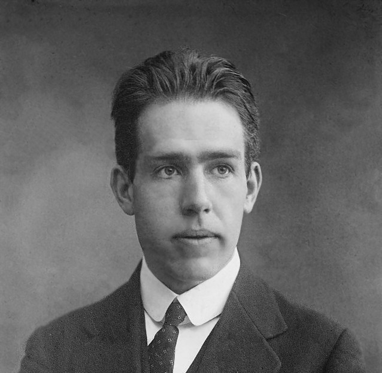

1885 - 1962 • Atomun Mimarı
Niels Henrik David Bohr, Kopenhag'da entelektüel bir ailenin çocuğu olarak doğdu. Babası fizyoloji profesörüydü. Gençliğinde sadece bilimle değil, sporla da yakından ilgiliydi. Kardeşi Harald ile birlikte Akademisk Boldklub takımında futbol oynadı; Niels başarılı bir kaleciydi. Ancak bilim tutkusu ağır bastı ve İngiltere'ye giderek J.J. Thomson ve Ernest Rutherford gibi devlerle çalışma fırsatı buldu.
Rutherford'un atom modelindeki büyük bir eksikliği (elektronların neden çekirdeğe düşmediğini) çözmek için kuantum teorisini kullandı. 1913'te ortaya attığı devrim niteliğindeki modele göre:
Bu teori, maddelerin neden farklı renklerde ışık yaydığını (spektrumları) mükemmel bir şekilde açıkladı.
Bohr, kuantum mekaniğinin belirsizlikler üzerine kurulu olduğunu savunurken, Albert Einstein buna şiddetle karşı çıkıyordu. Einstein'ın meşhur "Tanrı zar atmaz" sözüne karşılık Bohr, "Albert, Tanrı'ya ne yapacağını söylemeyi bırak!" cevabını vermiştir.
2. Dünya Savaşı sırasında Nazi Almanyası Danimarka'yı işgal ettiğinde, Bohr'un annesi Yahudi olduğu için hayatı tehlikedeydi. 1943'te bir balıkçı teknesiyle gizlice İsveç'e kaçırıldı. Daha sonra ABD'ye geçerek Manhattan Projesi'nde (atom bombası yapımı) danışman olarak yer aldı, ancak savaş sonrasında nükleer silahlanmaya karşı barışçıl bir tutum sergiledi.
Periyodik tablonun 107. elementine, bilime yaptığı devasa katkılardan dolayı Bohrium (Bh) adı verilmiştir. Ayrıca kurduğu Kopenhag Teorik Fizik Enstitüsü, bugün hala dünyanın en saygın bilim merkezlerinden biridir.